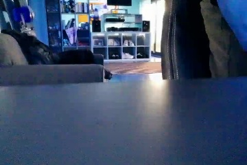
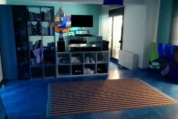
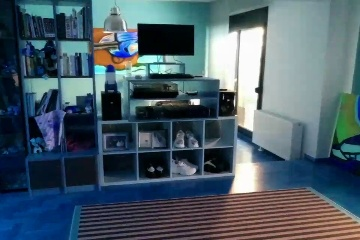
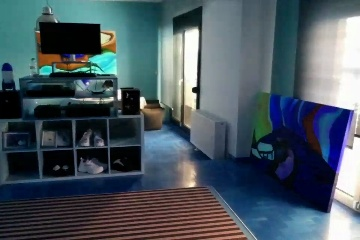
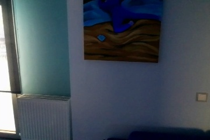
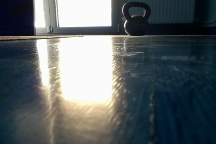

# Set up a timer that triggers events at the specified frame rate
pygame.time.set_timer(pygame.USEREVENT + 1, 1000 // FPS)
# In the main loop, process all pending events
for event in pygame.event.get():
if event.type == pygame.USEREVENT + 1:
self.update()
elif event.type == pygame.KEYDOWN:
self.keydown(event.key)
elif event.type == pygame.KEYUP:
self.keyup(event.key)Key navigation & Video snapshots
2025-04-27
TL;DR
- Learn how to control a Tello drone using keyboard navigation with responsive, event-based controls in Python (via pygame).
- Understand why velocity-based commands and fixed frame-rate updates create smoother, more natural drone movement.
- See how to stream live video from the drone, process frames, and overlay status info (like battery level).
- Get step-by-step instructions to add a keyboard shortcut for saving video snapshots directly from the drone feed.
- Discover practical tips for reliable streaming and why naive command loops don’t work well for real-time control.
- Preview what’s next: moving from keyboard to game controller navigation for even better piloting.
Series: Code, Fly & AI
Video streaming & snapshots
There is no autonomous flying without vision, and now is the first time we can have a peek at streaming video and capturing it.
The same example from above contains the video streaming as well.
Video streaming
Setting Up the Stream
First, the code initializes the video stream:
# Make sure streaming is off before we start
self.tello.streamoff()
# Then turn streaming on
self.tello.streamon()
# Get the object that will give us frames
frame_read = self.tello.get_frame_read()This pattern of turning streaming off then on again is a good practice to ensure we’re starting with a clean slate. I had it hang a couple of times before applying this trick.
Capturing and processing frames
In the main loop, the code grabs frames from the drone and processes them:
# Get the latest frame
frame = frame_read.frame
# Add battery information to the frame
text = "Battery: {}%".format(self.tello.get_battery())
cv2.putText(frame, text, (5, 720 - 5),
cv2.FONT_HERSHEY_SIMPLEX, 1, (0, 0, 255), 2)This overlays the battery percentage in red text at the bottom left of the frame. A handy feature when we’re flying!
Frame transformation
The next three lines are needed for displaying the frame correctly in pygame:
# OpenCV uses BGR, pygame needs RGB
frame = cv2.cvtColor(frame, cv2.COLOR_BGR2RGB)
# Rotate the frame 90 degrees
frame = np.rot90(frame)
# Flip the frame upside down
frame = np.flipud(frame)Why all this transformation? Cameras often capture images in orientations or color formats that aren’t immediately displayable. OpenCV uses BGR color format while pygame expects RGB, and the Tello camera orientation needs adjusting to appear correctly on screen.
Displaying in pygame
Finally, the frame is displayed in the pygame window:
# Convert numpy array to a pygame surface
frame = pygame.surfarray.make_surface(frame)
# Draw the surface to the screen
self.screen.blit(frame, (0, 0))
# Update the display
pygame.display.update()This process happens every frame (120 times per second with the default settings), creating a smooth video feed.
Video snapshots
Not included in the example code is the ability to take a snapshot by pressing a key and saving the current frame to disk.
So let’s add it:
1. First, add the necessary import
At the top of the file, make sure we have:
import os2. Create a directory to store images
Add this near the beginning of our __init__ method:
# Create a directory to store images if it doesn't exist
if not os.path.exists('tello_images'):
os.makedirs('tello_images')3. Add a key handler for taking snapshots
In the keyup method, add a case for a new key (I’ll use ‘p’ for “picture”):
def keyup(self, key):
""" Update velocities based on key released """
if key == pygame.K_UP or key == pygame.K_DOWN: # set zero forward/backward velocity
self.for_back_velocity = 0
elif key == pygame.K_LEFT or key == pygame.K_RIGHT: # set zero left/right velocity
self.left_right_velocity = 0
elif key == pygame.K_w or key == pygame.K_s: # set zero up/down velocity
self.up_down_velocity = 0
elif key == pygame.K_a or key == pygame.K_d: # set zero yaw velocity
self.yaw_velocity = 0
elif key == pygame.K_t: # takeoff
self.tello.takeoff()
self.send_rc_control = True
elif key == pygame.K_l: # land
not self.tello.land()
self.send_rc_control = False
elif key == pygame.K_p: # take a snapshot
self.take_snapshot()4. Add the snapshot method
Add this new method to our FrontEnd class:
def take_snapshot(self):
"""
Take a snapshot of the current frame and save it to disk
"""
# Get the current frame
frame = self.tello.get_frame_read().frame
if frame is not None:
# Create a filename with timestamp
timestamp = time.strftime("%Y%m%d-%H%M%S")
filename = f"tello_images/tello_snapshot_{timestamp}.jpg"
# Save the image - note we save the original frame before any transformations
cv2.imwrite(filename, frame)
print(f"Snapshot saved: {filename}")The resulting code can be found here.
Let’s try it out!
It all works just fine, here are some low res snapshots I made:






Navigating with a keyboard is a disaster, so….
What’s next?
To improve navigation we are going to hook up the GameSir T1d, read on...